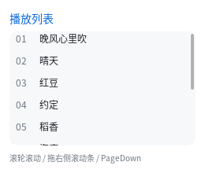

界面与控件
滚动
overflow: visible 之外的两个值在这套实现里分工很清楚：
| 值 | 裁掉溢出内容 | 能滚 |
|---|---|---|
visible（默认） |
❌ | ❌ |
hidden |
✅ | ❌ |
auto |
✅ | ✅ 有溢出时 |
.list { width: 236px; height: 140px; overflow: auto; }

一个反直觉的设计：滚动偏移是烘进布局的
大多数 UI 框架的滚动是在绘制时加一个偏移，再在命中测试里做逆变换。本库反过来：
ql_ui_scroll_by() → 改 node->scroll_y → 重跑 ql_ui_layout()
└→ 布局末尾把子树整体平移 -scroll_y
为什么这么做：绘制、命中测试、paint_box、脏区，四件事读的都是
node->border_box。只要布局完的坐标是对的，这四件事一行都不用改，也不会出现
"绘制滚了、命中没滚"这种最难查的错位。
代价是滚动后要重排一次。实测 211 个节点全树布局是 0.037 ms，按 60fps （16.6 ms/帧）算完全够用 —— 而且只在滚动时重排，不滚的时候一次都没有。
三种滚法
| 输入 | 行为 |
|---|---|
| 滚轮 | 命中测试找到指针下的节点 → 往上找最近的可滚动祖先 → 滚它 |
| 拖滚动条 | 右侧 10px 内按下即进入拖动（按"可拖动行程 / 可滚动范围"换算），不触发点击 |
PageUp / PageDown / Home / End |
作用于焦点节点所在的可滚动容器 |
滚轮滚不动的方向会夹紧到边界，不会传给父级（父级滚动留给下一步：滚动链）。
代码里怎么用
/* 找到滚动容器（也可以自己保存节点指针） */
QLUINodeRT *list = NULL;
for (uint16_t i = 0; i < ui->node_count; i++)
if (ui->nodes[i].style->overflow == QL_UI_OVERFLOW_AUTO) { list = &ui->nodes[i]; break; }
printf("可滚 %dpx\n", (int)list->scroll_max_y);
/* 滚一段（内部会重排 + 标脏） */
ql_ui_scroll_by(ui, list, 0, 40);
/* 滚到指定位置（夹紧到 [0, max]） */
ql_ui_scroll_to(ui, list, 0, 0);
ql_ui_layout(ui, w, h); /* scroll_to 不重排，要自己调 */
scroll_by 会重排，scroll_to 不会 —— 因为 scroll_to 是"设置状态"，
连续设多次只该排一次；scroll_by 是"做一次操作"，用户按一下滚轮就该看到结果。
滚动条
覆盖式画在容器右侧（默认宽 4px、半透明中灰），不占布局空间。能用 CSS 调：
.list { scrollbar-width: thin; } /* auto(4px) / thin(2px) / none */
.list { scrollbar-color: #4A5568 #1A202C; } /* 滑块色 [轨道色] */
::-webkit-scrollbar 那套伪元素没有（本库不支持伪元素级滚动条）。轨道目前不画，
只取滑块色。overflow: hidden 永远不画 —— 这正是 hidden 与 auto 的唯一区别。
两个已知限制
- 没有滚动惯性：松手就停。触屏上会显得"硬"。
- 滚轮不传递给父级：内层列表滚到底后继续滚，外层不动（浏览器会链式滚动）。
<select> 的下拉、虚拟长列表、滚动惯性都排在这之后。